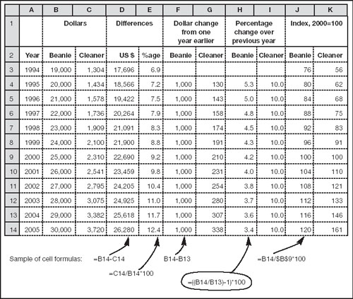

Comparisons
Suppose you were given two sets of figures for take-home pay shown on the left in Fig. 5.8. How would you analyse them? These are the figures which are illustrated on pp. 62 and 63 – which should give you your first clue. You could easily use your spreadsheet to create revealing charts.
Fig 5.8. Comparing pay
Another handy trick is to use a spreadsheet for some simple analysis. Columns D and E show the simplest comparison (e.g. that in 2000 the accountant’s pay was more than $22,000 greater than that of the cleaner – or, looking at it from the other angle, the cleaner’s pay was less than 10% that of the beanie’s). The absolute changes (columns F and G) and percentage changes (columns H and I) are instructive, as are the index numbers (columns J and K). We will talk more about percentages in the next chapter. First, take a look at index numbers.
Indexing
Index numbers are nothing more than ordinary numbers on a standardized basis. Usually a value of 100 is chosen as the base, and all other numbers are expressed as a percentage of that base. To convert any number to an index:
Select a base (the year 2000 in the example) and note the actual value ($25,000 for the beanie).
Divide every figure by the base value and multiply the result by 100.
This removes the effect of scale, and allows direct trends and relative movements. There is a catch. Two indexes will always converge at the base (where they both equal 100 – the year 2000 in this example). You can see this clearly if you look back at the charts on pp. 62–3, The beanie is caught/overtaken/lags.
Index numbers are very good for examining relative movements – but you need to see the underlying figures (e.g. salary) to judge the absolute relationship between two amounts.
|